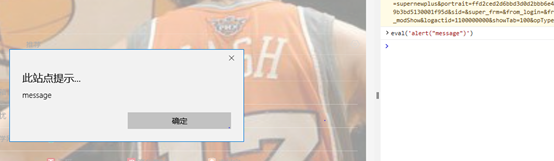

我们在写JavaScript程序的时候，有一个函数很有趣，eval()，这个方法非常有趣，他可以编译他内部的字符串，并将字符串按照JS代码执行，例如eval(‘alert(“message”)’)，执行的结果就是弹窗打印出message这个信息。如下图

最近我在用C#写一个功能的时候的时候也遇到相似的需求，我的要求是自定义一个对字符串的验证代码，在程序执行的过程中对自定义的代码进行编译并执行，最后返回执行的结果。自定义的验证代码可以保存在文件中，也可以保存到数据库中，在需要的时候取出验证的代码，并执行。
要执行这样的功能可以有几种方案可以实现。
方案一、
通过拼接字符串的方式，生成一个cs类文件，再使用反射的方式调用此cs文件即可，此方式最简单，只需要熟练使用反射的相关知识即可。
方案二、
使用CSharpCodeProvider对象来解析字符串并通过反射的方式执行。
上面两种方案都需要熟练使用反射的技术，方案一相对来说比较简单，这里主要学习使用方案二来是实现相关功能。
使用方案二需要了解以下几个类。
CSharpCodeProvider, ICodeCompiler, CompilerParameters, CompilerResults
下面是一个示例程序
//1.创建CSharpCodeProvider的实例
CSharpCodeProvider cs = new CSharpCodeProvider();
//2.创建一个ICodeComplier对象
ICodeCompiler cc = cs.CreateCompiler();
//3.创建一个CompilerParameters的实例
CompilerParameters cp = new CompilerParameters();
cp.GenerateInMemory = true;//设定在内存中创建程序集
cp.GenerateExecutable = false;//设定是否创建可执行文件,也就是exe文件或者dll文件
cp.ReferencedAssemblies.Add("System.dll");//此处代码是添加对应dll文件的引用
cp.ReferencedAssemblies.Add("System.Core.dll");//System.Linq存在于System.Core.dll文件中
//4.创建CompilerResults的实例
string strExpre= "using System;using System.Collections.Generic;using System.Linq;using System.Text;using System.Threading.Tasks;namespace DynamicCompileTest{public class TestClass1{public bool CheckBool(string source){ return source.Contains(\"SC\"); }}}";
CompilerResults cr = cc.CompileAssemblyFromSource(cp, strExpre);
if (cr.Errors.HasErrors)
{
Console.WriteLine(cr.Errors.ToString());
}
else
{
//5.创建一个Assembly对象
Assembly ass = cr.CompiledAssembly;//动态编译程序集
object obj = ass.CreateInstance("DynamicCompileTest.TestClass1");
MethodInfo mi = obj.GetType().GetMethod("CheckBool");
bool result = (bool)mi.Invoke(obj, new object[] { "LYF" });
}
Console.ReadKey();
总体来说，两个方案都是通过拼接字符串最后形成可执行的代码来实现的，与我们平时在VS中写代码的方式相同。